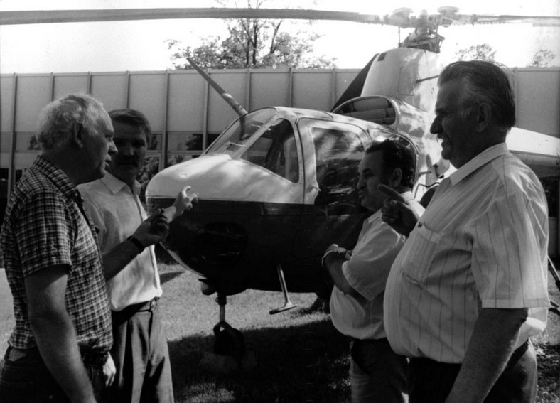
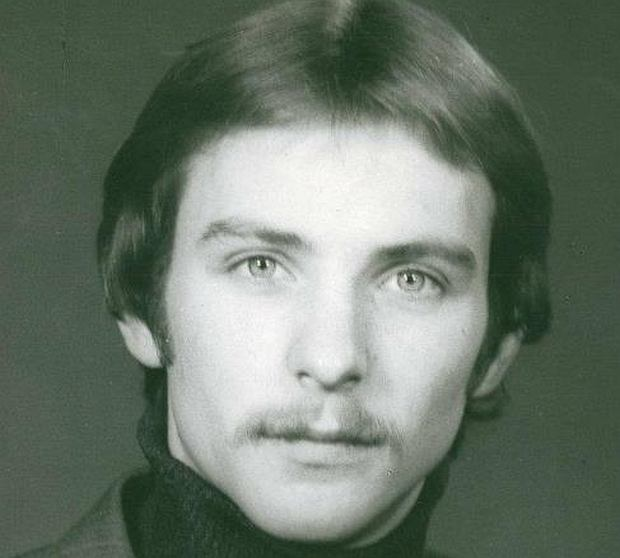
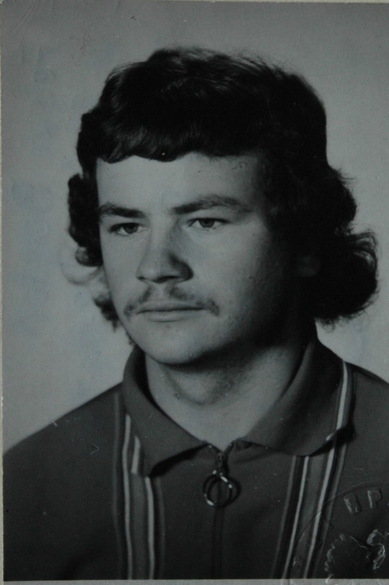
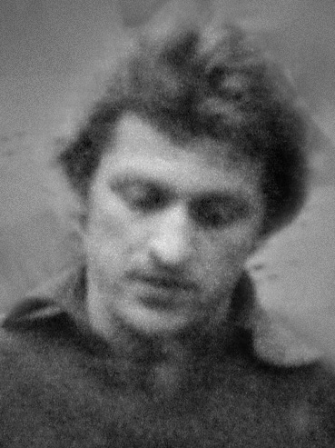
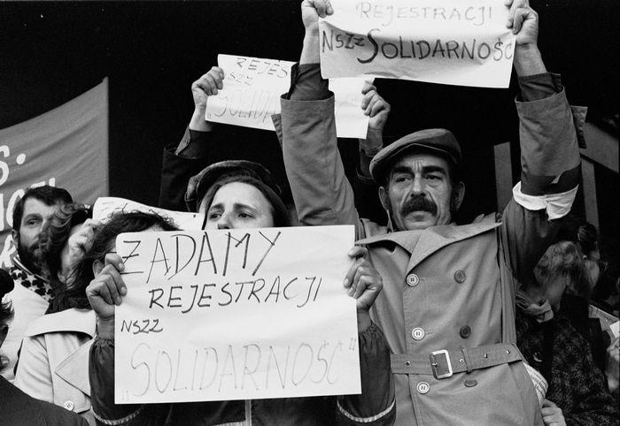

1 lipca 1980 r. władze PRL wprowadziły kolejną podwyżkę cen niektórych przetworów mięsnych. Pierwotnie miała ona objąć tylko sklepy komercyjne, podrożało jednak także mięso w kioskach zakładowych i stołówkach. Ta drobna z pozoru sprawa stała się impulsem dla wybuch
„największej fali strajków w dziejach PRL”
Początkowo dochodziło do licznych spontanicznych protestów o charakterze ekonomicznych, które kończyły się hojną obietnicą podwyżek przez władze. Sytuacja zmieniła się 8 lipca 1980 r. po rozpoczęciu strajku w wytwórni Sprzętu Komunikacyjnego „PZL-Świdnik”. Po raz pierwszy utworzono tam komitet strajkowy (wtedy Komitet Postojowy) oraz sformułowano listy postulatów.
W kolejnych dniach strajki ogarnęły całą Lubelszczyznę. W wielu zakładach powoływano komitety strajkowe, których żądania wychodziły poza strefę ekonomiczną, chcąc zmian w dotychczasowych związkach zawodowych, oraz wyborów do rad zakładowych. Jednak ponownie rząd zgodził się na powołanie specjalnej Komisji Rządowej (pod przewodnictwem wicepremiera Mieczysława Jagielskiego) do rozpatrzenia ich żądań.
Po tych wydarzeniach zrelaksowany Gierek udał się na „tradycyjny urlop na Krymie”. Tymczasem napięcie nie opadło, nagromadzone emocje i niezadowolenie wymagały tylko małej iskry, która roznieci „płomień rewolucji”.
Wydarzenia które doprowadziły do upadku komunizmu w całej Europie Środkowo-Wschodniej, rozpoczęły się w Gdańsku.
Na początku sierpnia 1980 r. władze zdecydowały się na zwolnienie z pracy działaczki WZZ (Wolne Związki Zawodowe), Anny Walentynowicz. W odpowiedzi postanowiono zorganizować strajk, którego plan działania opracował Bogdan Borusewicz. 14 sierpnia, rano 3 młodych robotników (Jerzy Borowczak, Bogdan Felski, Ludwik Prądzyński), uzbrojonych w ulotki zdołało poderwać załogę Stoczni Gdańskie do protestu. Po kilku godzinach pojawił się Lech Wałęsa, który stanął na czele komitetu strajkowego.
  Żądania obejmowały:
Przywrócenie do pracy Walentynowicz oraz Wałęsy
upamiętnienie poległych w grudniu 1970 r.
podwyżkę płac
16 sierpnia dyrekcja zgodziła się spełnić żądania, a Wałęsa w imieniu strajkujących ogłosił zakończenie strajku.
Jednakże pod wpływem grupy kobiet (Anny Walentynowicz, Aliny Pienkowskiej, Henryki Krzywonos) argumentujących iż protesty w innych zakładach zostaną stłumione bez wsparcia stoczni wznowiono protest.
Nocą 16 na 17 sierpnia powołano Międzyzakładowy Komitet Strajkowy z Wałęsą na czele. MKS ogłosił listę 21 postulatów. Pomimo odrzucenia najbardziej radykalnych (np. żądania rozpisania wolnych wyborów), niektóre wciąż wydawały się niemożliwe do zaakceptowania – przede wszystkim pierwszy postulat, powołania Wolnych Związków Zawodowych.
MKS stało się w rejonie strajków nowym centrum władzy, zarządzono m. in. Przestrzeganą przez handel i hotele prohibicję. Strajkujący otrzymali wiele wsparcia ze strony artystów, przedstawicieli ugrupowań opozycyjnych oraz kościoła.
Władze próbowały odciąć Trójmiasto od reszty przez blokadę telefonów, jednak było to bezskuteczne. O strajku informowały media całego świata, a MKS miało emisariuszy w całym kraju przewożących ulotki z listą postulatów i wzywające do solidaryzowania się z protestem.
Drugim strajkowym centrum stał się Szczecin. 19 sierpnia w Stoczni im. Warskiego powstał MKS na czele z Marianem Jurczykiem. Opracowano listę 35 postulatów analogicznych do gdańskich.
Odpowiedzią władz było wysłanie do Gdańska i Szczecina komisje rządowe kierowane przez wicepremierów. Pierwszej z nich przewodniczył Tadeusz Pyka, a następnie Mieczysław Jagielski, drugiej zaś Kazimierz Barcikowski. Aresztowano też dziesiątki osób mogących wesprzeć strajk.
Władze wyrażały gotowość zaakceptowania postulatów, jednak pierwszy punkt był nie do przyjęcia przez władze, ponieważ łamał podstawowe zasady funkcjonowania systemu opartemu na centralizacji i kompletnej kontroli. Robotnikom za to tylko ten punkt dawał gwarancję na spełnienie pozostałych postulatów.
Przełomowy okazał się 26 sierpnia, do strajku dołączyły kolejne zakłady, w tym Huta im. Lenina i Zakłady im. Cegielskiego w Poznaniu. W kolejnych dniach strajki rozszerzały się na kolejne regiony, aż do 29 sierpnia kiedy stanęła większa cześć zakładów na Górnym Śląsku. W obliczu tak ogromnej presji władze skapitulowany. Następnego dnia Jurczyk i Barcikowski podpisali porozumienie, później kolejne porozumienie podpisali Wałęsa i Jagielski. Na oczach całego świata kształtowała się nowa rzeczywistość.
Konsekwencją sierpnia’ 80 był upadek Edwarda Gierka, zastąpionego przez Stanisława Kania 5 września. Władze początkowo liczyły na ograniczenie zasięgu poniesionej klęski. Starano się utrudnić funkcjonowanie nowym związkom, tworzono także opinię, że związki mogą powstawać tylko w województwach objętych porozumieniem. Jednak wybuch kolejnych strajków zmusił rząd do zaprzestania działań.
17 września w Gdańsku zdecydowano, że powstanie jeden, silny związek, oparty na organizacji regionalnej, pod zaproponowaną przez Karola Modzelewskiego „Solidarność”. Powołano tymczasowe centralne władze związku – Krajową Komisję Porozumiewawczą pod przewodnictwem Lecha Wałęsy.
Ponieważ władze w dalszym ciągu utrudniały w wielu miejscach tworzenie struktur „Solidarności” KKP, ogłosiło 3 października strajk ostrzegawczy, który pokazał potęgę nowego związku.
24 października Sąd Wojewódzki w Warszawie zarejestrował Niezależny Samorządny Związek Zawodowy „Solidarność”. Jednocześnie dokonał zmian w statucie, dopisując uznanie przez „Solidarność” kierowniczej roli partii komunistycznej oraz ograniczenie prawa do strajków. Zostały jednak stanowczo odrzucone przez kierownictwo związku pod groźbą strajku generalnego.
Ostatecznie zawarto kompromis. 10 listopada Sąd Najwyższy zmienił decyzję Sądu Wojewódzkiego, przywracając zapisy dotyczące strajków, a kwestię uznawania władz PRL przeniesiono do załącznika do statutu.